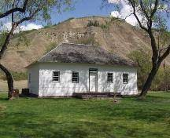

This is an old Hudson’s Bay trading fort. This was built by Heritage Park, in 1956 in efforts to re-create the original trading post in 1865. This is super realistic and has some real artifacts from the original trading post.

This is an old Hudson’s Bay trading fort. This was built by Heritage Park, in 1956 in efforts to re-create the original trading post in 1865. This is super realistic and has some real artifacts from the original trading post.
Figure out the answer to this question to find the location numbers to the address of Calgary's oldest buliding (We gave you the street name and number): "20 - 12, 10 x 10 - 91, 0 x 287, 9 Avenue SE" At this address you will find a tiny log house which was built sometime between 1876 - 1881, it is Calgary’s oldest building and It is still on its original site, it has just been restored. This was constructed as a place to Stay For HBC’s employees who worked at a post near Calgary. This historic log house is known as the Hunt House.

Once HBC stopped trading fur, they started to sell a variety of stuff, they needed a location so: They chose calgary! This is their first downtown department store ever! Their store opened in 1884. It has been renovated so it.is more modern, and open for shopping. Look for this treasure somewhere Calgary downtown! Once you find it, go for a shopping spree!

Fort Chipewyan III was one of the most powerful and influential fur trading posts in the late 1800s/early 1900s. This site sits on nearly three hectares of land, near the town of Fort Chipewyan, which is approximately 220km north of Fort McMurray.

Find this gem that really brings history to life! This site consists of 4 restored historic buildings and multiple information pieces which help create a picture and view the perspective of what life was like for indigenous, fur traders, and missionary peoples. Did you know that The North West Company established this site as a fur trading post in 1805 – 100 years before Alberta even became a province! To figure out where this amazing site is located crack the following riddle: What is it called to not eat animal products? So the address is: Dun(The answer), AB.
